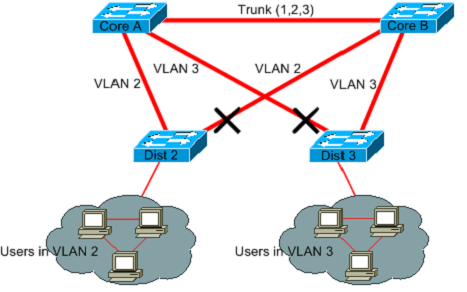

- Ao desabilitar uma das conexões é disperdiçado banda passante em um link, reduzindo o desempenho da rede.
- A convergência de uma spanning Tree, ou até mesmo uma rapid Spanning tree é lenta.
- Devido a desabilitação de alguns links, o caminho nem sempre é ótimo de um ponto ao outro.

Ao desabilitar um link redundante, ao mesmo tempo é impedido loop, é desperdiçado band a passante
Ao desabilitar um link redundante, ao mesmo tempo é impedido loop, é desperdiçado band a passante
A solução Encontrada por Radia foi utilizar um protocolo de roteamento na camada 2. O Protocolo IS-ISno Trill é o responsável por criar as rotas para essa rede.
RBridges
As Rbridges atendem a várias funcionalidades:
- Têm a capacidade de coexistir com brdiges antigas, de modo a garantir uma atualização para a nova tecnologia de forma gradual.
- Comuta quadros utilizando o menor caminho entre a origem e o destino, mantendo sempre o estado dos enlaces.
- Funciona com qualquer protocolo da camada 3.
- Permite Equal cost multi path .